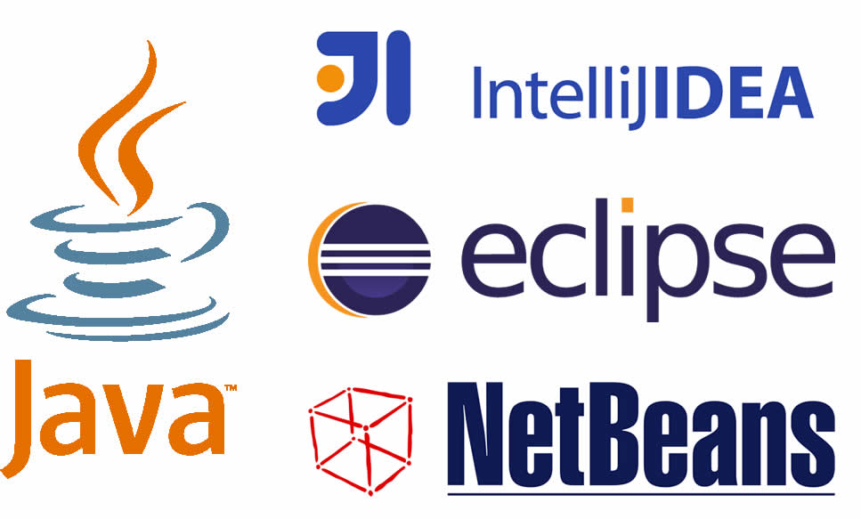
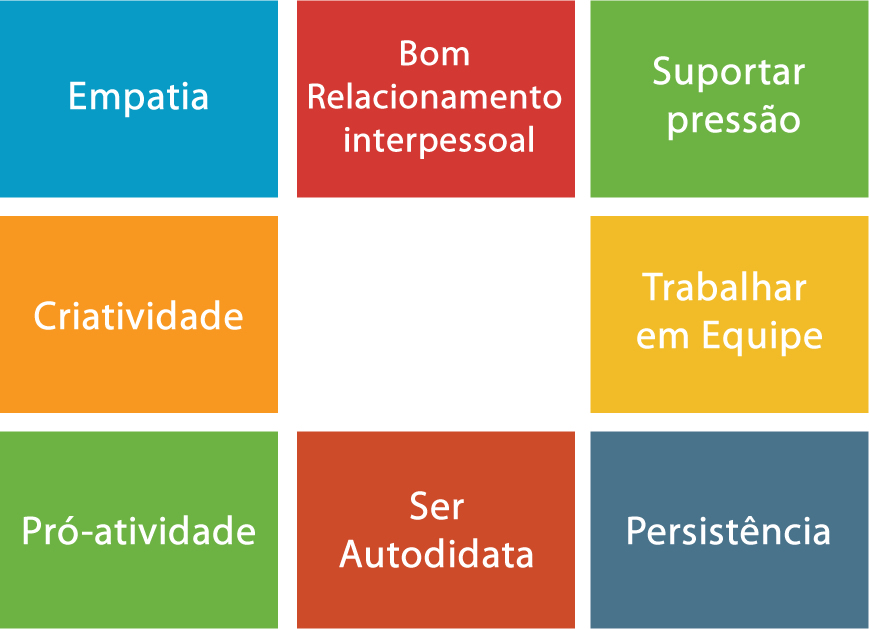

DE PADAWAN A JEDI
A JORNADA DO DESENVOLVEDOR JAVA
Atenção
Aperte 's' para ver as anotações dos slides
Este recurso só funciona se estiver acessando a apresentação através de um servidor web

Quem sou?
Josenaldo de Oliveira Matos Filho
Jugleader no UaiJUG
Programador aposentado
Contatos
Email: josenaldo@gmail.com
Twitter: @josenaldomatos
Github: https://github.com/josenaldo
Steam: josenaldo
PSN: vudu_reverso
Quem somos?

Grupo de usuários Java do Triângulo Mineiro
www.uaijug.com.brJava é fácil de aprender!

Java é livre! E de graça!

Bilhões de dispositivos pelo mundo
Comunidade vibrante!

Ferramenta pra tudo!

Bons profissionais em falta no mercado

Trabalhar de qualquer lugar
Os pilares do aprendizado
O que ler?

Dá pra usar o Youtube?
De quais ferramentas eu preciso?
Como praticar?
Como participar?
Sobrinho
Mestre da Programação Orientada a Gambiarras
Estagiário
Só serve pra apanhar e ser sacaneado
Júnior
Tem potencial, mas ainda não sabe de nada
Pleno
Dá conta do recado, mas só até certo ponto

Sênior
Manja dos paranauês. E se acha.

Arquiteto
É o herói da galera e resolve tudo
Ninja
O Homem, o Mito, a Lenda.

Pra começar

Pra se garantir

Soft skills
Level UP!